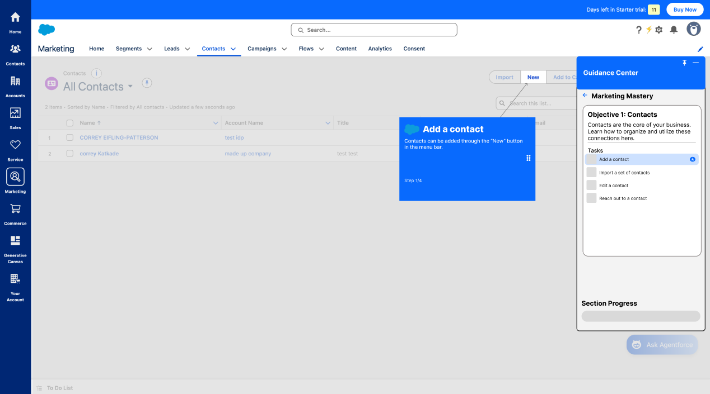
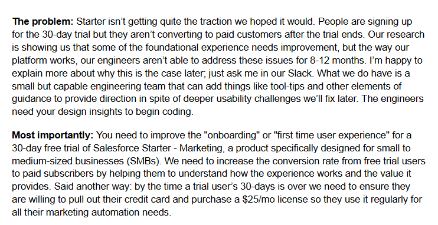
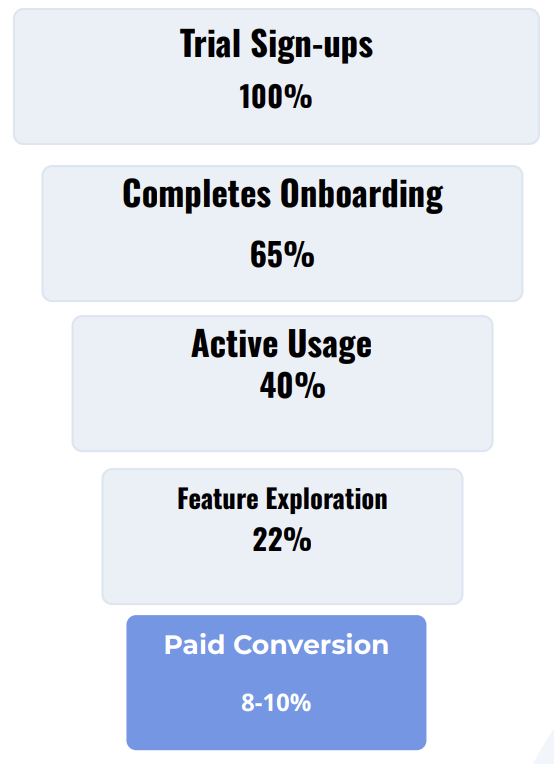
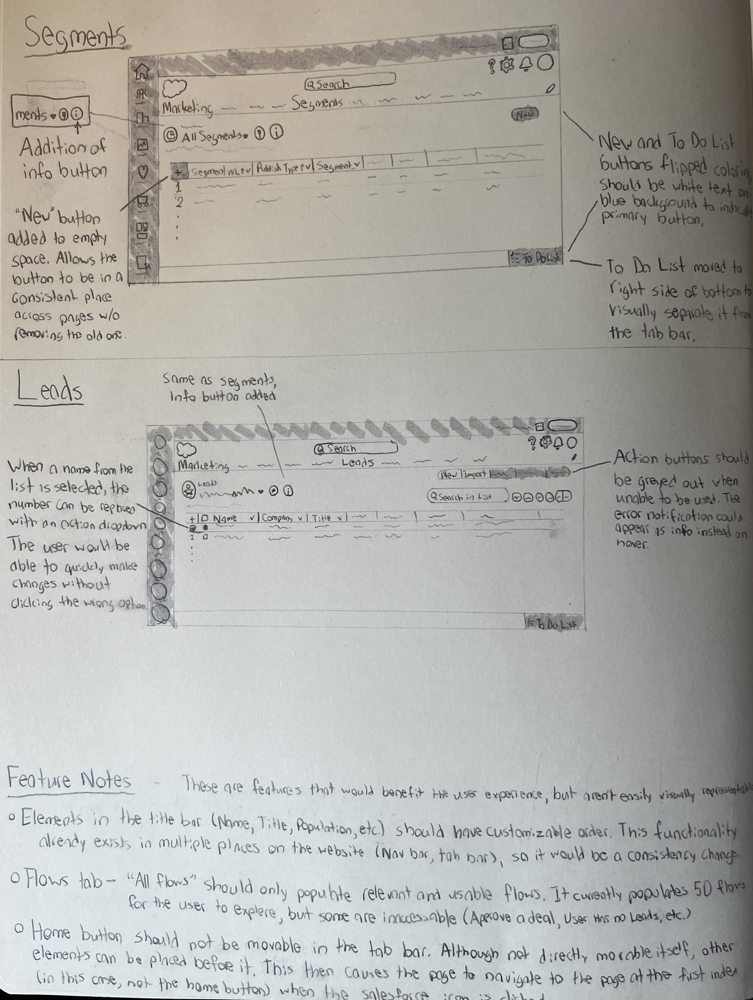
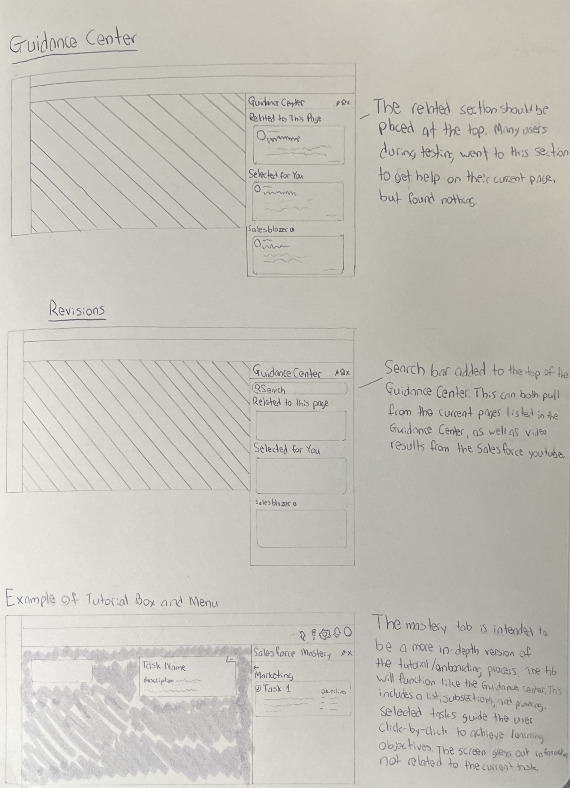
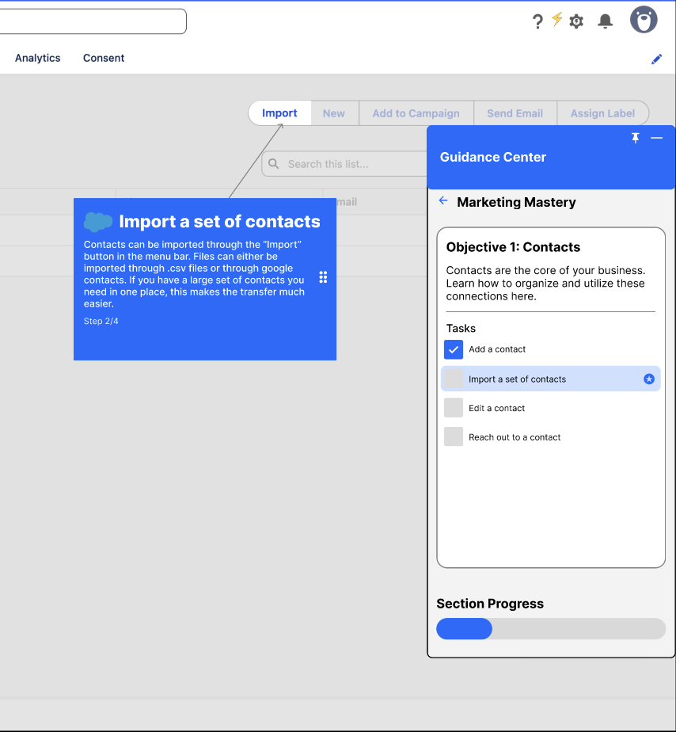
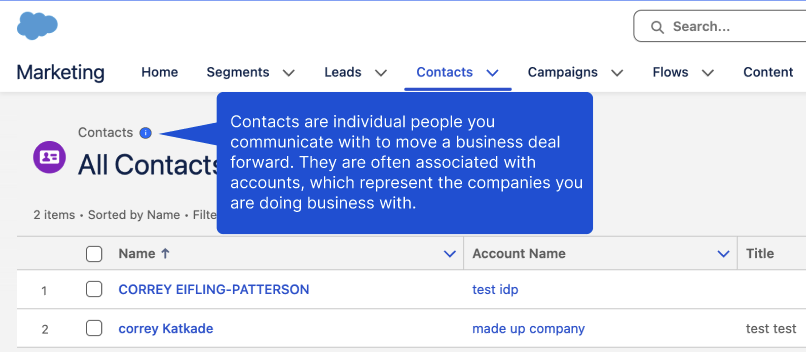
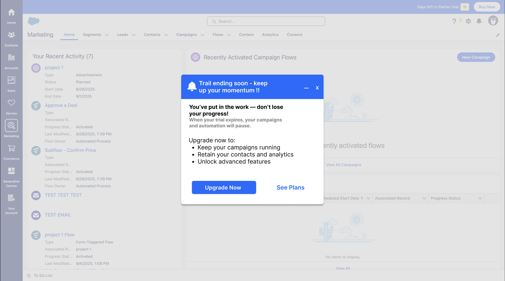

Orient before asking for action
New users first needed a mental model of the product and its terminology.
Conversion research · Product design · Salesforce Guided Trial
A replayable, task-based learning experience that helps small-business trial users understand Salesforce Starter without rebuilding the platform beneath them.

The tools were already there. The trial needed to make their value understandable.
Salesforce Starter was attracting trial users but not converting enough of them into paid customers. Foundational changes were months away, so our three-person team was asked to improve the first-time marketing experience with additions a small engineering team could realistically build (such as guidance, tooltips, and lightweight overlays).


Our participant explored before acting (and repeatedly lost momentum when Salesforce could not explain the next step in context).
I conducted an exploratory usability session with a business-aware novice using a simulated company. This was directional research, not broad validation, but the behavioral pattern was clear: unfamiliar terms such as flows, consent imports, and segments interrupted exploration; setup feedback was ambiguous; and useful features were difficult to connect into a meaningful sequence.
Secondary research added a learning lens. Experiential learning suggested that users would understand concepts more deeply by completing real tasks, while spaced repetition suggested those tasks should remain available to revisit rather than disappear after onboarding.
New users first needed a mental model of the product and its terminology.
Definitions were most useful beside the object or action causing confusion.
A dismissible tour was not enough for a complex product used over a 30-day trial.
I translated our research into the Marketing Mastery concept and led its Figma prototyping. I also helped organize the team’s files, sketches, findings, and timeline so separate ideas could resolve into one coherent proposal.
The key constraint became an advantage: instead of creating a separate training product, the concept extends Salesforce’s existing Guidance Center. Users can choose an objective, complete real tasks in the live interface, see progress, and replay a section whenever they need a refresher.


The walkthrough does not describe Salesforce from the sidelines. It guides users through doing the work.
Marketing Mastery breaks broad concepts into repeatable objectives. The Contacts unit, for example, moves from adding a contact to importing, editing, and reaching out. A synchronized walkthrough points to the exact control needed for each task while the Guidance Center preserves context and progress.
Inline definitions support the same strategy at a smaller scale, giving new users plain-language explanations without forcing them into documentation or a separate tab.


My mastery-course work became one layer of the team’s broader 30-day trial proposal. The team paired in-product learning with milestone prompts: initial setup, a first campaign, advanced automation, demonstrated results, and a final reminder that made the consequences of expiration concrete.
This system connected activation and conversion without treating every message as a sales prompt. Early moments teach; later moments demonstrate accumulated value and offer a clear path forward.

The replayable walkthrough made a dense suite feel more approachable for an SMB user.
Salesforce responded positively to the experiential walkthrough, especially its replayability and its ability to make Starter feel less overwhelming. The team also valued that the proposal added meaningful clarity while building almost entirely on top of existing systems.
This was an early concept project, and our documentation and participant coverage were thinner than I would accept today. My next step would be to test the mastery course with several SMB trial users, measuring task completion, terminology comprehension, confidence, and unaided return to key workflows before evaluating conversion behavior.